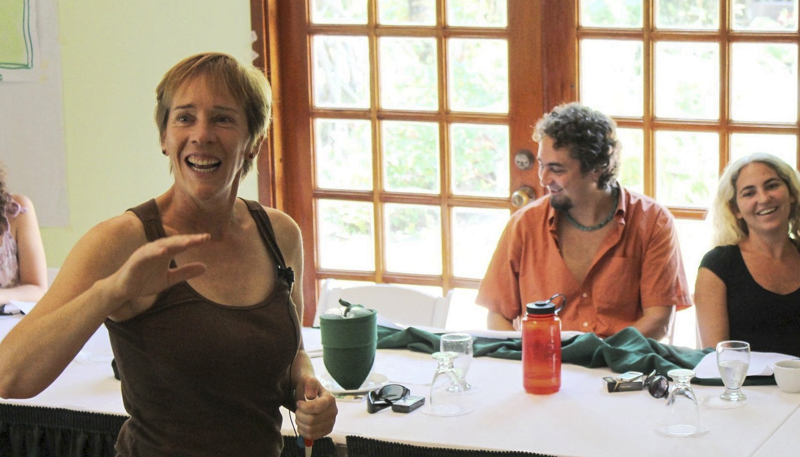

 With 30 years of experience, I am passionate about helping organizations advance conservation for the next generation of people and the numerous species that make our unique planet so rich and exciting. I created Aligning Visions in 2005 to support conservation organizations with facilitated planning tools, program assessments, and capacity-building services. With my strong background in global environmental issues, I quickly grasp the key themes that an organization is tackling and work with my clients to craft a vision for greater effectiveness. Building staff and board buy-in for a clear strategic direction is a critical investment that enables clients to implement the strategy with dedication and inspiration.
I am a global citizen based in Panama. I travel extensively, working primarily in Latin America, but as needed in Asia, the US and Africa. I work in English, Spanish or Portuguese — and sometimes all three!.
My work experience, colleagues and travels continue to provide my greatest lessons and insights. However, I am also grateful to my formal schooling opportunities, including an executive program at Stanford, a Master’s in Agriculture from California Polytechnic, and a Bachelor of Science from Georgetown University's School of Foreign Service. Parenting has been a wonderful education, a great joy, and a further inspiration to pass a healthy planet on to the next generation. Finally, I am a budding photographer and birder — reflecting a passion for beauty and the outdoors that I share with colleagues around the world!
I partner with my clients to strengthen their capacity to be effective leaders in their countries while achieving measurable conservation impact. My conservation planning expertise is used daily to facilitate planning or participatory program assessments around conservation science concepts, business plans for new project areas, threat abatement and sustainable livelihood strategies. My organizational development background is equally useful, focused on appreciative assessments, strategic planning, board development, partnering, and program management. Please see my résumé for more career details.